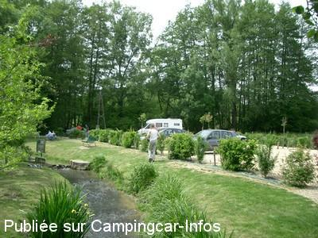
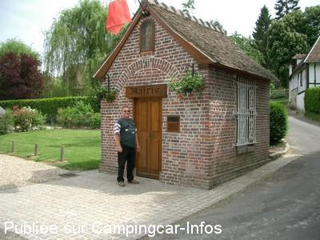
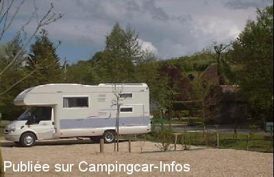

APN = Parking toléré jour/nuit de :
SAINT GERMAIN DE PASQUIER
(N° 285)
Accès/adresse :
Route de la Vallée de l'Oison D86
27370 SAINT GERMAIN DE PASQUIER
27370 SAINT GERMAIN DE PASQUIER
Latitude : (Nord) 49.2464° Décimaux ou 49° 14′ 47′′
Longitude : (Est) 0.99972° Décimaux ou 0° 59′ 58′′
Tarif : Gratuit
Services :
Autres informations :

Le 02/06/2004 par Daniel Beunon

Le 02/06/2004 par Daniel Beunon

Le 02/05/2003 par RIMOR SB 678 / la plus petite Mairie de France
de
fabien
le 01/11/2013 :
difficile de s y rendre en pleine nuit car pas signaler
trop proche de la route
sinon tres joli cadre
difficile de s y rendre en pleine nuit car pas signaler
trop proche de la route
sinon tres joli cadre
de
Elter philippe
le 30/10/2010 :
Un Grand merci à cette petite Mairie, aire paisible en pleine campagne.
Un Grand merci à cette petite Mairie, aire paisible en pleine campagne.
de
martoine
le 13/04/2010 :
Nous avons apprécié cette aire de stationnement (pas de services) pour y passer la nuit. Très calme, nous y repasserons dès que possible pour une meilleure visite de la région. Belle étape pour nous. Merci cette commune constituée de "la plus petite mairie de France"
Nous avons apprécié cette aire de stationnement (pas de services) pour y passer la nuit. Très calme, nous y repasserons dès que possible pour une meilleure visite de la région. Belle étape pour nous. Merci cette commune constituée de "la plus petite mairie de France"
de
christian boutmy
le 23/02/2007 :
Vérifiées sur place, les coordonnées GPS annoncées sur le site (Nord 4924640, Est 000.99972) sont exactes.
Vérifiées sur place, les coordonnées GPS annoncées sur le site (Nord 4924640, Est 000.99972) sont exactes.
de
Denis
le 26/06/2006 :
Superbe aire, très calme au milieu d'une magnifique vallée. Y ai rencontré ce week-end 24/06 un conseiller municipal de cette minuscule Mairie et il se trouve aussi CCariste. Peut-être un nouvel essai pour un point d'eau résistant aux dégradations diverses! Il faut encourager les initiatives de cette commune de 140 ames !
Superbe aire, très calme au milieu d'une magnifique vallée. Y ai rencontré ce week-end 24/06 un conseiller municipal de cette minuscule Mairie et il se trouve aussi CCariste. Peut-être un nouvel essai pour un point d'eau résistant aux dégradations diverses! Il faut encourager les initiatives de cette commune de 140 ames !
de
Pascal
le 10/06/2006 :
J'ai connu cette petite mairie en 1985, elle était alors toute blanche, il n'y avait pas de parking et l'endroit était désert... Bravo à cette commune de mettre enfin un point sur la valeur de nos richesses provinciales, bravo aussi aux initiatives à venirs.
J'ai connu cette petite mairie en 1985, elle était alors toute blanche, il n'y avait pas de parking et l'endroit était désert... Bravo à cette commune de mettre enfin un point sur la valeur de nos richesses provinciales, bravo aussi aux initiatives à venirs.